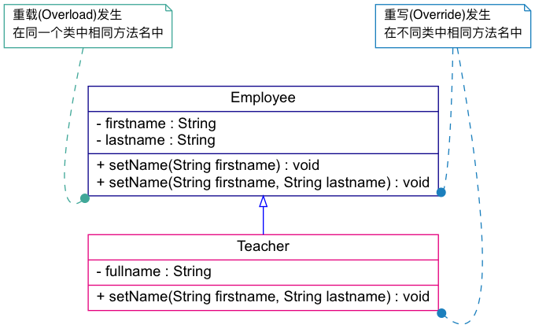

Java 编程语言精粹
1 JDK
JDK 是 Java 语言的软件开发工具包，主要用于移动设备、嵌入式设备上的 JAVA 应用程 序。JDK 是整个 Java 开发的核心，它包含了 JAVA 的运行环境（JVM+Java 系统类库） 和 JAVA 工具。目前主要使用的 JDK 版本为 1.8 ，其参考见 JDK Documentation 。
1.1 JDK 1.8 新特性
- Java 8 允许我们给接口添加一个非抽象的方法实现，只需要使用 default 关键字即 可。
- 新增 lambda 表达式
- 提供函数式接口
- Java 8 允许你使用关键字来传递方法或者构造函数引用
- 我们可以直接在 lambda 表达式中访问外层的局部变量。
JDK 1.8 的概念图如下：

1.2 JDK 常用包
1.2.1 java.lang
这个是系统的基础类，比如 String 等都是这里面的，这个 package 是唯一一个可以 不用 import 就可以使用的 Package
1.2.2 java.io
这里面是所有输入输出有关的类，比如文件操作等
1.2.3 java.net
这里面是与网络有关的类，比如 URL, URLConnection 等
1.2.4 java.util
这个是系统辅助类，特别是集合类 Collection, List, Map 等

1.2.5 java.sql
这个是数据库操作的类，Connection, Statememt，ResultSet 等
2 语言特性
2.1 静态变量和实例变量
- 在语法定义上的区别：静态变量前要加
static关键字，而实例变量前则不加。 - 在程序运行时的区别：实例变量属于某个对象的属性，必须创建了实例对象，其中的 实例变量才会被分配空间，才能使用这个实例变量。静态变量不属于某个实例对象， 而是属于类，所以也称为类变量，只要程序加载了类的字节码，不用创建任何实例对 象，静态变量就会被分配空间，静态变量就可以被使用了。总之，实例变量必须创建 对象后才可以通过这个对象来使用，静态变量则可以直接使用类名来引用。
静态变量在 Java 中是属于类的，它在所有的实例中的值是一样的。当类被 Java 虚拟 机载入的时候，会对静态变量进行初始化。如果你的代码尝试不用实例来访问非静态的 变量，编译器会报错，因为这些变量还没有被创建出来，还没有跟任何实例关联上。
2.2 final 关键字
- 修饰类：表示该类不能被继承
- 修饰方法：表示方法不能被覆盖
- 修饰变量：表示变量只能一次赋值以后值不能被修改（常量）
2.3 assert
assertion (断言) 在软件开发中是一种常用的调试方式，很多开发语言中都支持这种机
制。一般来说，assertion 用于保证程序最基本、关键的正确性。assertion 检查通常
在开发和测试时开启。为了提高性能，在软件发布后， assertion 检查通常是关闭的。
在实现中，断言是一个包含布尔表达式的语句，在执行这个语句时假定该表达式为 true；
如果表达式计算为 false, 那么系统会报告一个 AssertionError。
断言用于调试目的：
assert(a > 0); // throws an AssertionError if a <= 0
断言可以有两种形式：
assert Expression1; assert Expression1 : Expression2;
Expression1 应该总是产生一个布尔值。 Expression2 可以是得出一个值的任意表达式； 这个值用于生成显示更多调试信息的字符串消息 断言在默认情况下是禁用的，要在编译 时启用断言，需使用 source 1.4 标记：
javac -source 1.4 Test.java
要在运行时启用断言需要开启允许断言的选项：
-ea或者-enableassertions: 启用断言-da或者-disableassertions: 禁用断言
3 基本用法
3.1 基本类型
Java 中有 8 个基本类型
3.2 String
3.2.1 String 的不可变性
不可变对象指的是 一个对象，在它创建完成之后，不能再改变它的状态 。不能改变 状态的意思是，不能改变对象内的成员变量，包括基本数据类型的值不能改变，引用类 型的变量不能指向其他的对象，引用类型指向的对象的状态也不能改变。 如何创建不 可变类
至于为什么要把 String 类设计成不可变类，是它的用途决定的。其实不只 String， 很多 Java 标准类库中的类都是不可变的。在开发一个系统的时候，我们有时候也需要 设计不可变类，来传递一组相关的值，这也是面向对象思想的体现。不可变类有一些优 点，比如因为它的对象是只读的，所以多线程并发访问也不会有任何问题。当然也有一 些缺点，比如每个不同的状态都要一个对象来代表，可能会造成性能上的问题。所以 Java 标准类库还提供了一个可变版本，即 StringBuffer。
javac 编译可以对字符串常量直接相加的表达式进行优化，不必要等到运行期去进行
加法运算处理，而是在编译时去掉其中的加号，直接将其编译成一个这些常量相连的结
果。所以 String s = "a" + "b" + "c" + "d"; 只生成一个对象.
3.2.2 String, StringBuilder 和 StringBuffer
Java 平台提供了两种类型的字符串：String 和 StringBuffer / StringBuilder，它们 可以储存和操作字符串。其中 String 是只读字符串，也就意味着 String 引用的字符 串内容是不能被改变的。
而 StringBuffer 和 StringBuilder 类表示的字符串对象可以直接进行修改。
StringBuilder 是 JDK 1.5 中引入的，它和 StringBuffer 的方法完全相同，区别在
于它是在单线程环境下使用的，因为它的所有方面都没有被 synchronized 修饰，因
此它的效率也比 StringBuffer 略高。
3.3 序列化
序列化就是一种用来处理对象流的机制，所谓对象流也就是将对象的内容进行流化。可 以对流化后的对象进行读写操作，也可将流化后的对象传输于网络之间。序列化是为了 解决在对对象流进行读写操作时所引发的问题。
序列化的实现：将需要被序列化的类实现 Serializable 接口，该接口没有需要实现
的方法， implements Serializable 只是为了标注该对象是可被序列化的，然后使用
一个输出流 (如：FileOutputStream) 来构造一个 ObjectOutputStream(对象流) 对象，
接着，使用 ObjectOutputStream 对象的 writeObject(Object obj) 方法就可以将参
数为 obj 的对象写出(即保存其状态)，要恢复的话则用输入流。
3.4 错误和异常
java.lang.Error: Throwable 的子类，用于标记严重错误，表示系统级的错误和 程序不必处理的异常。合理的应用程序不应该去try/catch这种错误。是恢复不是 不可能但很困难的情况下的一种严重问题；比如内存溢出，不可能指望程序能处理这 样的情况；java.lang.Exception: Throwable 的子类，表示需要捕捉或者需要程序进行处理 的异常，是一种设计或实现问题；也就是说，它表示如果程序运行正常，从不会发生 的情况。并且鼓励用户程序去catch它。
Error 和 RuntimeException 及其子类都是未检查的异常 （unchecked exceptions）， 而所有其他的 Exception 类都是检查了的异常（checked exceptions）
- checked exceptions: 上下文环境有关，即使程序设计无误，仍然可能因使用的问题
而引发．通常是从一个可以恢复的程序中抛出来的，并且最好能够从这种异常中使用
程序恢复。比如 FileNotFoundException, ParseException 等。检查了的异常发生在
编译阶段，必须要使用
try/catch（或者throws）否则编译不通过。- ClassNotFoundException
- IOException
- FileNotFoundException
- unchecked exceptions: 通常是如果一切正常的话本不该发生的异常，但是的确发生
了。 发生在运行期，具有不确定性，主要是由于程序的逻辑问题所引起的。比如
ArrayIndexOutOfBoundException, ClassCastException 等。从语言本身的角度讲，
程序不该去 catch 这类异常，虽然能够从诸如 RuntimeException 这样的异常中
catch 并恢复，但是并不鼓励终端程序员这么做，因为完全没要必要。因为这类错误
本身就是 bug，应该被修复，出现此类错误时程序就应该立即停止执行。 因此，面对
Errors 和 unchecked exceptions 应该让程序自动终止执行，程序员不该做诸如
try/catch这样的事情，而是应该查明原因，修改代码逻辑。- NullPointerException
- ArrayIndexOutOfBoundException
- IllegalArgumentException
- OutOfMemoryError
RuntimeException：RuntimeException 体系包括错误的类型转换、数组越界访问和试图 访问空指针等等。处理 RuntimeException 的原则是：如果出现 RuntimeException，那 么一定是程序员的错误。例如，可以通过检查数组下标和数组边界来避免数组越界访问 异常。其他（IOException 等等）checked 异常一般是外部错误，例如试图从文件尾后 读取数据等，这并不是程序本身的错误，而是在应用环境中出现的外部错误。
《Effective Java》 中对于异常处理总结如下：
- 不要将异常处理用于正常的控制流（设计良好的 API 不应该强迫它的调用者为了正常的 控制流而使用异常）
- 对可以恢复的情况使用受检异常，对编程错误使用运行时异常
- 避免不必要的使用受检异常（可以通过一些状态检测手段来避免异常的发生）
- 优先使用标准的异常
- 每个方法抛出的异常都要有文档
- 保持异常的原子性
- 不要在 catch 中忽略掉捕获到的异常
3.5 equals 与 == 的区别
== 是一个运算符。 equals 则是 String 对象的方法，可以.（点）出来。 我们比较
无非就是这两种:
- 基本数据类型比较
==比较两个值是否相等。相等为 true 否则为 false；equals 不能直接用于基本类型的比较。需要将基本类型转换为包装器进行比较。 - 引用对象比较
==和 equals 都是比较栈内存中的地址是否相等 。相等为 true 否则为 false。 需注意几点：- String 是一个特殊的引用类型。对于两个字符串的比较，不管是
==和 equals 这两者比较的都是字符串是否相同 - 当你创建两个 String 对象时，内存中的地址是不相同的，你可以赋相同的值。所 以字符串的内容相同。引用地址不一定相同，（相同内容的对象地址不一定相同）， 但反过来却是肯定的
- 基本数据类型比较 (String 除外)
==和 equals 两者都是比较值
- String 是一个特殊的引用类型。对于两个字符串的比较，不管是
class App198 { public static void main(String args[]) { String s1 = "Hello"; String s2 = "Hello"; String s3 = new String("Hello"); String s4 = "Hel" + "lo"; // String is inmutable, it will compiles to "Hello" System.out.println(s1 == s2); System.out.println(s1.equals(s2)); System.out.println(s1 == s3); System.out.println(s1.equals(s3)); System.out.println(s1 == s4); System.out.println(s1.equals(s4)); } }
true true false true true true
3.6 集合
集合是 java.util 包中的工具类
3.7 格式输出字符串
String.format(String fmt, Object... args)的字符串格式和 C 语言的 printf 一样。MessageFormat.format(String fmt, Object... args)使用单引号标记任意字面 量，使用花括号加数字来表示相应的位置的占位符，例如：{0}表示第 1 个位置 的参数，{1}表示第 2 个位置的参数，以此类推。
import java.text.MessageFormat; class App9 { public static void main(String args[]) { String str1 = String.format("Hi, %s", "Jack"); String str2 = MessageFormat.format("Hi, {0}, I''m {1} years old.", "Tom", 18); String str3 = MessageFormat.format("'Hi, {0}, I''m {1} years old.'", "Tom", 18); System.out.println(str1); System.out.println(str2); System.out.println(str3); } }
Hi, Jack
Hi, Tom, I'm 18 years old.
Hi, {0}, I'm {1} years old.
4 面向对象
4.1 面向对象的特征
4.1.1 多态
- 概念：多态（Polymorphism）按字面的意思就是“多种状态，即同一个实体同时具有 多种形式"。一般表现形式是程序在运行的过程中，同一种类型在不同的条件下表现 不同的结果。多态也称为动态绑定，一般是在运行时刻才能确定方法的具体执行对象， 这个过程也称为动态委派
- 好处：
- 将接口和实现分开，改善代码的组织结构和可读性，还能创建可拓展的程序
- 消除类型之间的耦合关系。允许将多个类型视为同一个类型
- 一个多态方法的调用允许有多种表现形式
4.1.2 继承
- 概念：继承是从已有的类中派生出新的类，新的类能吸收已有类的数据属性和行为， 并能扩展新的能力
- 好处：提高代码的复用，缩短开发周期
4.1.3 封装
- 概念：就是把对象的属性和行为（或服务）结合为一个独立的整体，并尽可能隐藏对 象的内部实现细节
- 好处：
- 隐藏信息，实现细节。让客户端程序员无法触及他们不应该触及的部分
- 允许可设计者可以改变类内部的工作方式而不用担心会影响到客户端程序员
4.2 Overload 和 Override
Overload 是 重载 的意思，Override 是 覆盖 的意思，也就是 重写

- Overload 表示同一个类中可以有多个名称相同的方法，但这些方法的参数列表各不相
同
- Overload 的参数列表不同包括：参数类型不同，参数个数不同
- Overload 不能重载函数返回值，即方法名称、参数个数和参数类型相同的方法被视 为同一个重载方法
- Overload 也不能覆盖访问权限、抛出的异常。方法的异常类型和数目不会对覆盖造 成影响
- Override 表示子类中的方法可以与父类中的某个方法的名称和参数完全相同，通过子
类创建的实例对象调用这个方法时，将调用子类中的定义方法，这相当于把父类中定
义的那个完全相同的方法给覆盖了
- Override 可以用于接口实现类中实现接口类中的方法
- Override 可以在子类中实现父类的方法，相当于子类中的方法覆盖了父类中的方法， 是一种实现多态的重要途径
- Override 覆盖父类方法时，子类只能抛出比父类更少的异常。或者是抛出父类抛出 的异常的子异常
- Override 不能覆盖父类中的 private 方法